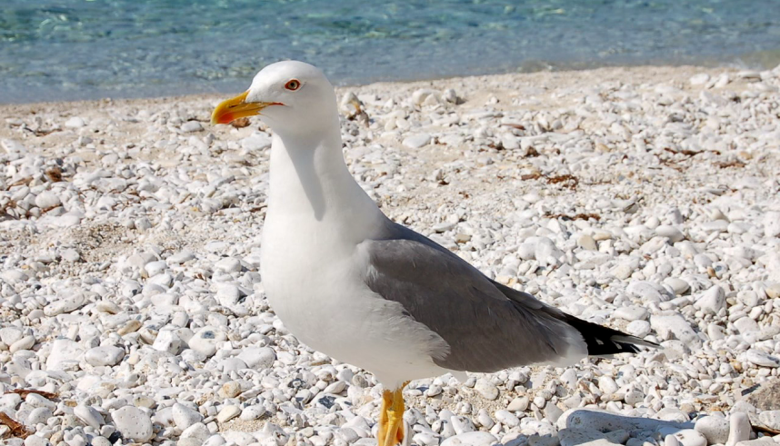
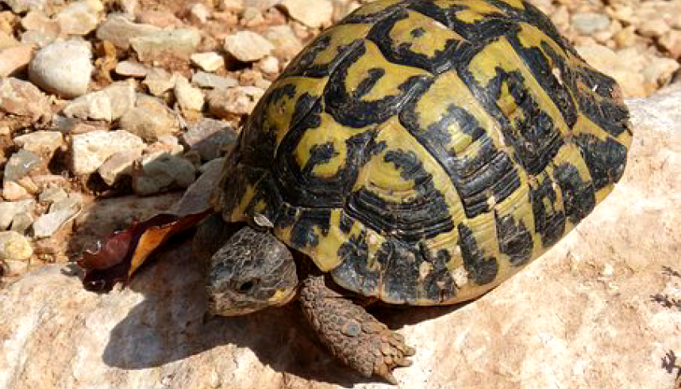
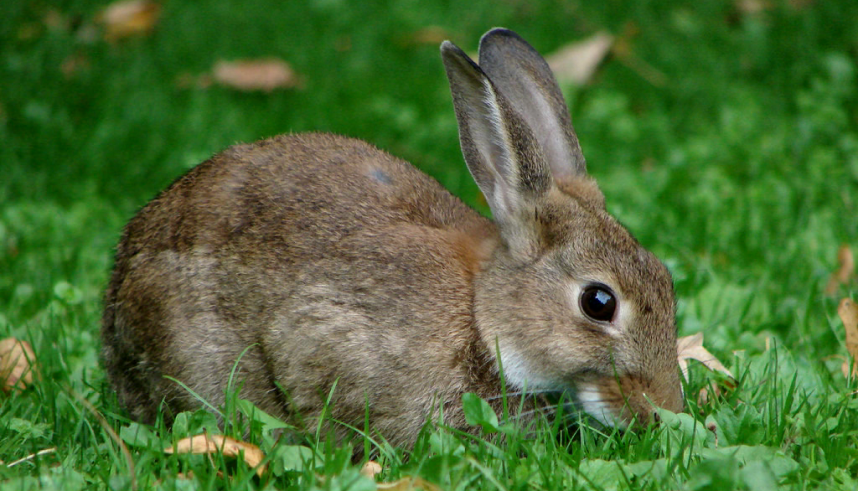

Isola Bella
Isola Bella

Fauna e Isola Bella
La Riserva è ricca di vegetazione e alterna la tipica macchia mediterranea. Sono presenti specie esotice provenienti da paesi dove esiste un clima mediterraneo che trovano sull’isola le condizioni idonee per crescere rigogliose e svillupparsi accanto a quelle originarie.
Il Gabbiano Reale
Il gabbiano reale è una specie comune nella Riserva. Si può osservare spesso mentre vola sopra le acque cristalline dell'isola.
La Testuggine Mediterranea
La testuggine mediterranea, simbolo di longevità, si trova spesso nelle zone più tranquille dell'isola, dove si nutre di piante marine.
Il Coniglio Selvatico
Il coniglio selvatico è una specie che popola le aree boscose dell'isola. È molto difficile da avvistare, ma la sua presenza è un segno di un ecosistema sano.